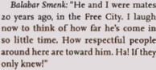
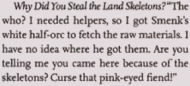
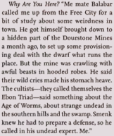
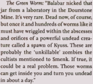
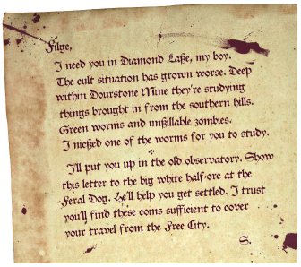
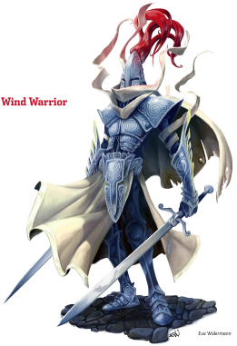

Week 5 - Success! The way is clear. A final guardian, and items of ancient power.
This week, Frith and J aren't really putting their whole effort into the adventure - they are kind of spaced out and only acting when other party members promt them to. The monsters, also, are strangely ignoring them. Accordingly, they each count as half a character for XP purposes.
The party Commences to question Filge. Their questioning touches on the following topics:
   
They decide to turn him in to the Sheriff, and commence to loot the observatory for evidence (riiiight ...). They discover a note from Balabar Smenk to Filge:

And then, without pursuing any further questions they head off.
Kullen's gang, of course are waiting for them outside. They are hiding in wait, but are spotted by the party. A battle ensues. Tom throws Filge at one of the gang, missing him but knocking Filge unconscious and doing some sort of internal injury of which he eventually dies. The battle is one-sided, as Kullen's gang have chosen an unwise spot to mount their ambush - fighting uphill. There are some comical moments. Eventually they are defeated and killed except for Merovinn, who the party permits to leave town.
The party returns the various bits of the Land family to their graves without further incident. Alastor briefly manifests and warns that party to watch out for the guardians behind the door, but nothing else happens. And so the party decide to rest up and head out to the Whispering Cairn at next opportunity.
Back at Allustan's place, he has some items of news for Flash. With the aid of a Comprehend Languages spell, he has decoded the names that the various glyphs that the party found. They are names of individuals. The glyphs appear to be written in an ancient glyph-language named "Vaati", which some scholars belive to be the original written form of Auran. The name on the sarcophagus is "Zosiel", and appears to be the lowest-ranking of the three glyphs, equivalent to a mid-ranking officer. The name found in the architect's quarters is "Nadroc", and is equivalent to minor nobility. The highest-ranking name, equivalent to that of a very highly-ranked noble, is "Icosiol" and appears on the base of the curious broken device found near the entrance to the cairn.
As to the worm, Allustan is very concerned indeed. It is the final piece of a puzzle that he has been working on for months - evidence of strange undead creatures infested with thousands of tiny green worms. His studies indicate that the worms might be connected with some sort of structure located beneath what is now Ragnolin Dourstone's copper mine.
But for now, the party mainly wants to loot the whispering cairn. Alustan throws Flash a bone in the form of a wand of Scorching Ray with a couple of charges left.
There remains little to tell.
The party head back into The Whispering Cairn, and through the now opened steel doors. Behind is a huge cavern carved into the rock. There is a walkway around the edge of the chamber, and for spokes leading inward to a central platform. Around the chamber are strange bas-reliefs depicting scenes from an ancient war. When the party steps onto the spokes leading in toward the middle, two Wind Warriors emerge .
The party battles, and no one dies. The warriors dissipate in a puff of air, and the party heads towards the inner platform. There is a column of air here, which conveys them up to the true tomb of Zosiel. On stepping on the stairs leading up to the sarcophagus, a bas-relief (another one!) animates and speaks, and Flash with a Comprehend Languages spell understands it to be saying "Say my Name!". Flash says "Zosiel", and the sarcophagus opens. Inside is:
- A pair of red horns, tipped with black.
- A diadem with Zosiel's sigil on it. When Tom dons it, he feels wiser by about 2 points.
- A box with a strange device inside, a short handle with a flexible adamantine loop on the end.
Allustan counsels them to keep these three items. The diadem, while seemingly a simple headband of wisdom, is an artifact of ancient times and may have further powers locked within. The strange device is a Talisman of the Sphere, a device capable of allowing one to control contained manifest zones of Mabar - so called "Spheres of Annihilation". It too is mostly inactive, but future adventures might unlock its mysteries. He is not sure about the horns, but you never know.
And so the foray to the whispering cairn reaches its conclusion. The party are level 3 and have not only some stuff, but at least one item that is a minor artifact, which in Eberron makes it damn near priceless. But there remains the mystery of the green worm and the strange "unkillable" undead. When next we meet, the party will have a mission: to infiltrate Ragnolin Dourstone's copper mine, uncover what foul abominations might lurk beneath, kill the bad dudes, and take their stuff.